🌳
شجرة العائلة
الدليل الإرشادي الكامل لاستخدام التطبيق
رابط الأدمنية (إضافة وتعديل — بحساب):
https://haydarvsky.github.io/familytree/
رابط العرض العام (مشاهدة واقتراحات — للجميع):
https://haydarvsky.github.io/familytree/view.html
🌳 شجرة العائلة — الدليل الإرشادي ٢
◈ ما هذا التطبيق؟ ومن يستخدمه؟
تطبيق ويب لبناء شجرة العائلة وحفظ أنسابها: الآباء المؤسسون في الأعلى ثم الأبناء والأحفاد نزولاً، مع صور الأفراد وسنوات الميلاد والوفاة بالتقويمين، وحساب القرابة بين أي شخصين، وإخراج الشجرة PDF. البيانات محفوظة سحابياً — أي تعديل يظهر للجميع فوراً، ويعمل من الجوال والحاسوب.
ثلاثة أدوار
| الصلاحية | 👑 الأدمن الأكبر | 👤 الأدمن المصغّر | 👁 الزائر |
|---|
| مشاهدة الشجرة والقرابة وتصدير PDF | ✓ | ✓ | ✓ |
| إضافة أفراد وتعديل بياناتهم | ✓ | ✓ | ✗ |
| حذف أفراد | ✓ | ✗ | ✗ |
| إضافة أدمنية وإزالتهم | ✓ | ✗ | ✗ |
| الاطلاع على سجل التعديلات والاقتراحات | ✓ | ✓ | ✗ |
| حذف الاقتراحات | ✓ | ✗ | ✗ |
| إرسال اقتراح باسمه من صفحة العرض | ✓ | ✓ | ✓ |
مهم: كل إضافة أو تعديل يُسجَّل باسم صاحبه تلقائياً في «السجل» — فكل أدمن مسؤول عما يُدخله.
للتجربة الحرة: أضف ?demo=1 لآخر الرابط فتفتح نسخة تجريبية ببيانات وهمية محفوظة في متصفحك فقط — جرّب فيها ما شئت دون أن تمسّ الشجرة الحقيقية. (صور هذا الدليل من الوضع التجريبي.)
🌳 شجرة العائلة — الدليل الإرشادي ٣
◈ الدخول إلى التطبيق
- افتح رابط الأدمنية: haydarvsky.github.io/familytree
- اكتب اسم المستخدم (حروف إنجليزية صغيرة وأرقام) وكلمة المرور اللذين أعطاك إياهما الأدمن الأكبر.
- اضغط دخول — يبقى دخولك محفوظاً في الجهاز فلا تعيد كتابة كلمة المرور كل مرة.
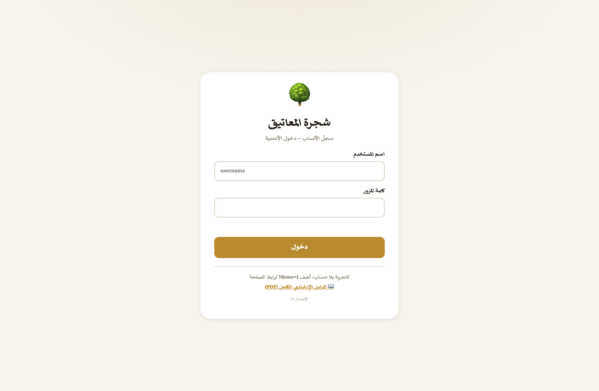
شاشة الدخول — لاحظ رقم الإصدار أسفلها، وطريقة الوضع التجريبي
إن نسي أدمن كلمة مروره: لا يستطيع أحد استرجاعها — يزيل الأدمنُ الأكبر حسابَه من «الأدمنية» ويُنشئ له حساباً جديداً باسم مستخدم مختلف.
🌳 شجرة العائلة — الدليل الإرشادي ٤
◈ فهم شاشة الشجرة
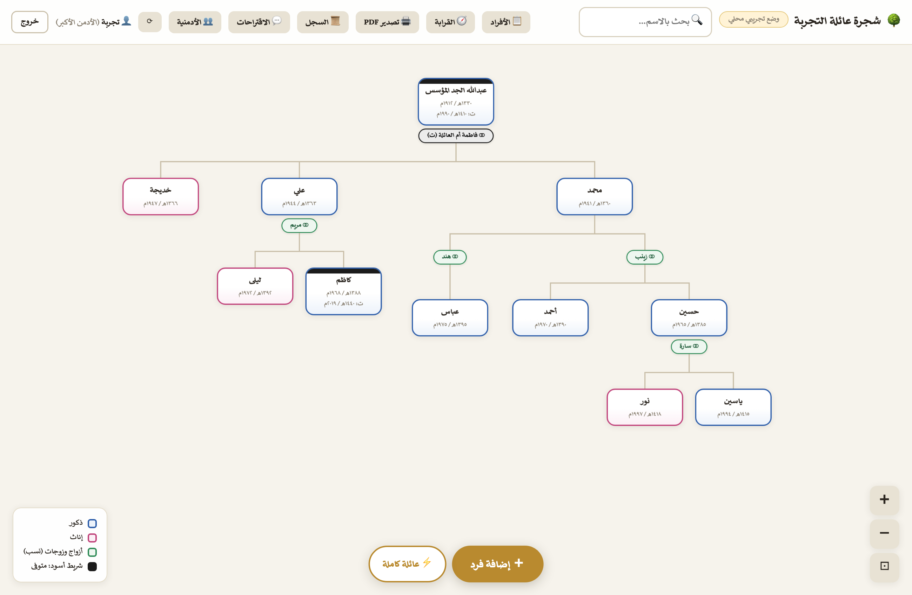
الشاشة الرئيسة: المؤسس أعلى الشجرة وذريته تحته — ولاحظ محمداً بزوجتيه: كل زوجة رقاقة خضراء رأسُ فرعٍ تحته أبناؤها
الألوان والعناصر
أزرق: الذكور
وردي: الإناث
⚭ رقاقة خضراء: الزوج/الزوجة — اضغطها تفتح بطاقته
شريط أسود أعلى البطاقة: متوفى
صورة الفرد تظهر دائرةً في بطاقته إن وُجدت، ومن لا صورة له تبقى بطاقته مختصرة بالاسم والسنوات.
اتجاه العرض: عمودي أو أفقي
زر «⇅ عمودي / ⇄ أفقي» في شريط الأدوات يبدّل شكل الشجرة، ويحفظ اختيارك للمرات القادمة:
- عمودي — المؤسسون أعلى الشجرة وذريتهم تنزل تحتهم جيلاً بعد جيل (الشكل المعتاد).
- أفقي — المؤسس يميناً على اليسار وذريته تتفرع نحو اليمين، وكل جيل عمود مستقل — مريح جداً للعائلات الطويلة الأجيال، ويظهر بنفس الشكل في تصدير PDF.
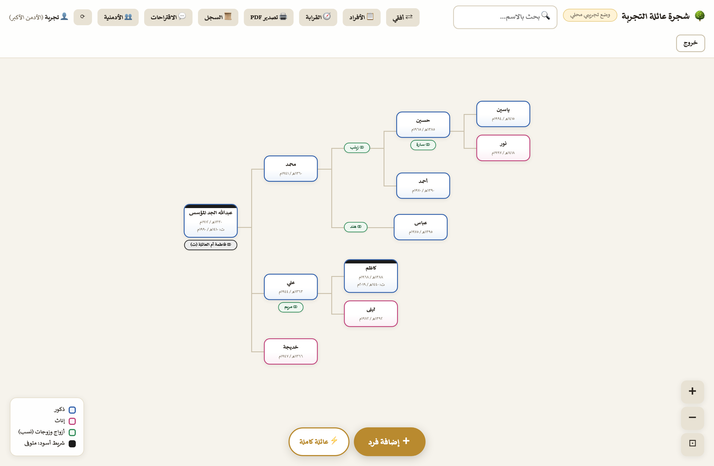
العرض الأفقي: المؤسس يساراً، وكل جيل عمود يمتد يميناً
التنقل بالماوس ولوحة المفاتيح
- عجلة الماوس تحرّك الشجرة في اتجاهها الطبيعي: فوق وتحت في العرض العمودي، ويمين ويسار في العرض الأفقي.
- Shift + العجلة يحرّكها في المحور الآخر، ولوحة اللمس تحرّك في الاتجاهين معاً.
- Ctrl (أو ⌘) + العجلة للتكبير والتصغير حول موضع المؤشر — وكذلك قرصة الأصابع على اللوحة والجوال.
- السحب بالماوس أو الإصبع على الخلفية: تحريك حر في كل الاتجاهات.
- لوحة المفاتيح: الأسهم ← ↑ → ↓ للتحريك (ومع Shift خطوات أكبر)، و+ و− للتكبير، و٠ لملاءمة الشجرة للشاشة.
- أزرار ＋ / － / ⊡ أسفل اليسار، وزر ؟ يذكّرك بهذه الاختصارات في أي لحظة.
- 🔍 البحث أعلى الشاشة: اكتب أي جزء من الاسم فيُحاط صاحبه بإطار ذهبي وتنتقل الشاشة إليه.
- سنوات الميلاد والوفاة تظهر على كل بطاقة بالتقويمين: ١٣٦٠هـ / ١٩٤١م.
🌳 شجرة العائلة — الدليل الإرشادي ٥
◈ بطاقة الفرد — مركز كل شيء
اضغط أي شخص في الشجرة تظهر بطاقته الكاملة: اسمه بسلسلة نسبه («فلان بن فلان بن فلان»)، وعمره وأبواه وأزواجه وأبناؤه (أسماؤهم ذهبية — اضغط أياً منها تنتقل لبطاقته)، ومن أضافه وعدّله.
لقب العائلة يُلحق تلقائياً بمن اتصل نسبُه بالمؤسس من جهة الآباء فقط — أما أولاد البنات من زوجٍ خارجي فلقبهم لقب أبيهم كما كُتب في اسمه («فهد بن سعود العتيبي»)، إلا أن يكون أبوهم من أبناء العائلة فيحملون لقبها.
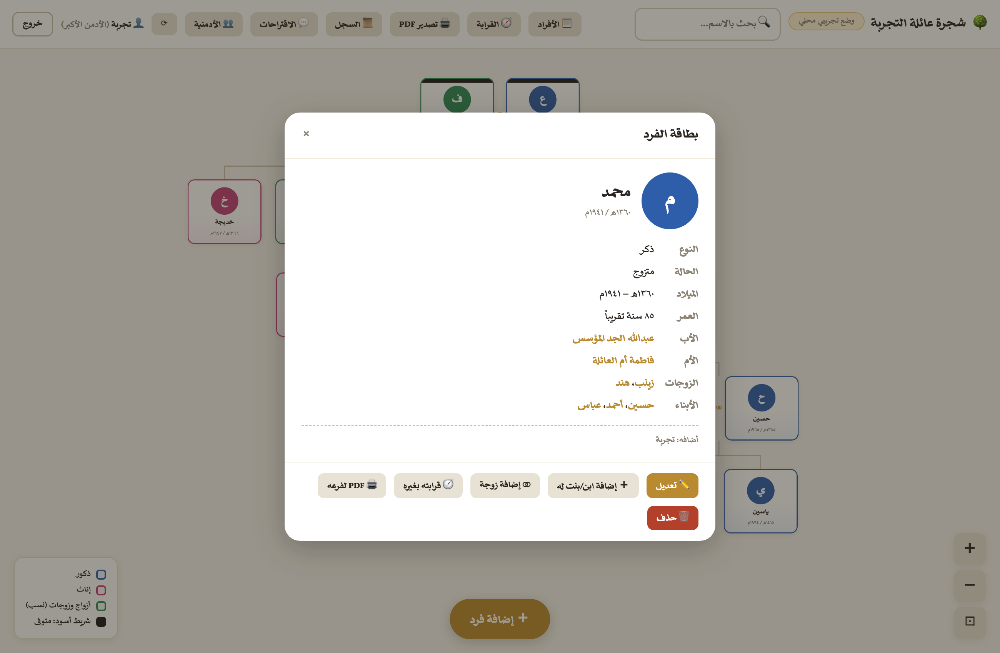
بطاقة «محمد» — لاحظ الأزرار في أسفلها
أزرار البطاقة
- ✏️ تعديل — يفتح نموذج بياناته كاملاً.
- ＋ إضافة ابن/بنت له — يفتح نموذج إضافة والأب معبأ مسبقاً باسمه.
- ⚡ إضافة عائلته — يفتح نموذج العائلة الكاملة (زوجة + أبناء دفعة واحدة) وهو الأب — ومن بطاقة بنتٍ تُثبَّت هي أماً ويُكتب اسم زوجها كتابة.
- ⚭ إضافة زوجة — أسرع طريق لتزويجه (يفتح النموذج والمؤشر على حقل اسم الزوجة).
- ⬆ إضافة أبيه / أمه — يظهران فقط لمن لا والد له مسجّلاً (انظر «البناء لأعلى» ص٩).
- 🧭 قرابته بغيره — يفتح حاسبة القرابة وهو الطرف الأول.
- 🔗 نسخ رابط بطاقته — رابط مباشر يفتح صفحة العرض على بطاقة هذا الفرد بعينها؛ شاركه في قروب العائلة.
- 📨 رابط نموذج أسرته — رابط خاص يفتح له نموذجاً يملأ فيه زوجاته وأبناءه بنفسه (انظر ص١٢).
- 🖨 PDF لفرعه — يصدّر فرعه وحده (هو وأزواجه وذريته).
- 🗑 حذف — للأدمن الأكبر فقط، ويحذف الفردَ وفرعه كاملاً (زوجاته وأبناؤه وأحفاده) بعد تأكيدٍ مزدوج يبيّن العدد والأسماء.
🌳 شجرة العائلة — الدليل الإرشادي ٦
◈ إضافة فرد جديد
- اضغط الزر الذهبي «＋ إضافة فرد» أسفل الشاشة (أو «إضافة ابن/بنت له» من بطاقة الأب مباشرة).
- اكتب الاسم كما تريد ظهوره في الشجرة.
- اختر النوع: ولد أو بنت.
- اختر الأب من القائمة. أول شخص في الشجرة اختر له: «— مؤسس الشجرة (أعلى الشجرة) —».
- اختر الأم (اختياري) — زوجات الأب المختار تظهر في أول القائمة.
- اكتب سنة الميلاد واختر تقويمها هجري أو ميلادي — والتحويل للتقويم الآخر يظهر تلقائياً تحت الحقل. وإن عرفت الشهر واليوم فأضفهما في الحقلين التاليين ليصير التحويل بين التقويمين دقيقاً (تقويم أم القرى) بدل التقريب.
- الترتيب بين الإخوة: اتركه فارغاً يُرتَّب تلقائياً بسنة الميلاد تصاعدياً. وتحت الحقل بيانٌ بإخوته الحاليين بأرقامهم — وإن كتبت رقماً محجوزاً تزحزح مَن بعده رقماً رقماً تلقائياً.
- إن كان متوفى فعّل «متوفى» واكتب سنة الوفاة بأي تقويم.
- التخصص والسيرة والصورة اختيارية — اكتب تخصصه أو مهنته (طبيب، مهندس، تاجر…)، ونبذة حياته وقصصه، واختر صورة تُصغَّر تلقائياً؛ كلها تظهر في بطاقته وتبقى للأجيال.
- اضغط 💾 حفظ — يظهر مباشرة في مكانه من الشجرة.
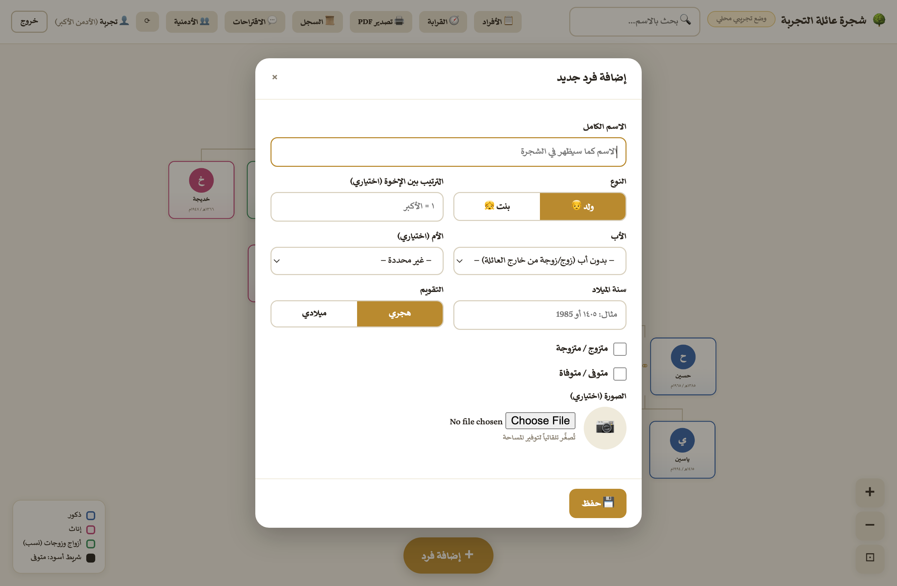
نموذج الإضافة
تلميح: لا تشترط إكمال كل الحقول — الاسم والنوع والأب تكفي، وتستطيع العودة بالتعديل متى شئت.
⚡ إضافة عائلة كاملة دفعة واحدة: زر «⚡ عائلة كاملة» بجانب زر الإضافة (أو زر «⚡ إضافة عائلته» في بطاقة أي فرد فيتعبأ الأب باسمه تلقائياً — ومن بطاقة بنتٍ تُثبَّت هي أماً ويكفي كتابة اسم زوجها لأنه عادة من خارج العائلة) يفتح نموذجاً مختصراً: تختار الأب (أو تكتب اسم أبٍ جديد يوضع مؤسساً)، وتكتب اسم الزوجة، ثم أسماء الأبناء سطراً سطراً (اسم + ولد/بنت + سنة الميلاد فقط) — فتُحفظ العائلة كلها بضغطة، وتُكمل تفاصيل أي فرد لاحقاً من «📋 الأفراد».
🌳 شجرة العائلة — الدليل الإرشادي ٧
◈ الزواج — وتعدد الزوجات
فعّل «متزوج / متزوجة» في نموذج الشخص (أو اضغط «⚭ إضافة زوجة» من بطاقته مباشرة) ثم:
- اكتب اسم الزوجة في الحقل.
- إن كانت من داخل العائلة (زواج أقارب): سيظهر اسمها في الاقتراحات فور الكتابة — اضغط 🔗 اسمها فتُربَط دون إنشاء بطاقة جديدة.
- إن كانت من خارج العائلة: أكمل كتابة اسمها واضغط «＋ أضف الزوجة» — تظهر رقاقة خضراء «جديدة»، وتُنشأ بطاقتها فعلياً عند الحفظ.
- للتعدد: كرّر الخطوة نفسها لكل زوجة. ولفكّ أي ارتباط اضغط ✕ على رقاقتها.
- اضغط 💾 حفظ.
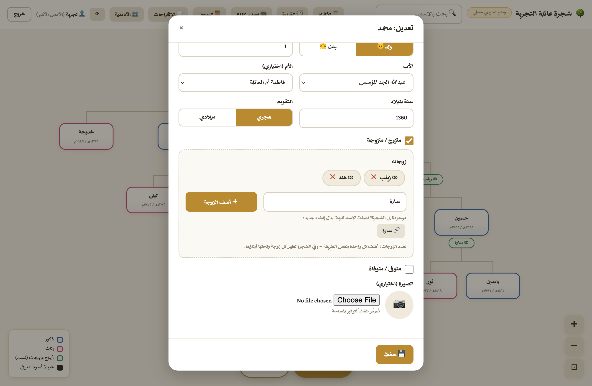
محمد له زوجتان (زينب وهند)، وكُتبت «سارة» فظهر اقتراح ربطها لأنها موجودة في الشجرة
كيف يظهر الزواج في الشجرة؟ الزوجة رقاقة خضراء صغيرة «⚭ فلانة» لاصقة تحت بطاقة زوجها — الضغط عليها يفتح بطاقتها كاملة. وبزوجتين فأكثر تصبح كل رقاقة رأسَ فرعٍ مستقل يتدلى منه أبناؤها هي — تماماً كما في صورة صفحة ٤. والمتوفاة يلحق اسمَها «(ت)»، وتاريخ الوفاة على البطاقات يسبقه «ت:».
🌳 شجرة العائلة — الدليل الإرشادي ٨
◈ قائمة الأفراد — الوصول السريع للتعديل والحذف
لا تفتّش في الشجرة عمّن تريد تعديله — زر «📋 الأفراد» في شريط الأدوات يعرض الجميع جدولاً مرتباً ألفبائياً:
- اضغط «📋 الأفراد».
- اكتب في حقل التصفية أي جزء من الاسم — تنحصر القائمة فوراً.
- أمام كل شخص: 👁 عرض بطاقته، ✏️ تعديل يفتح نموذجه مباشرة، 🗑 حذف (للأدمن الأكبر).
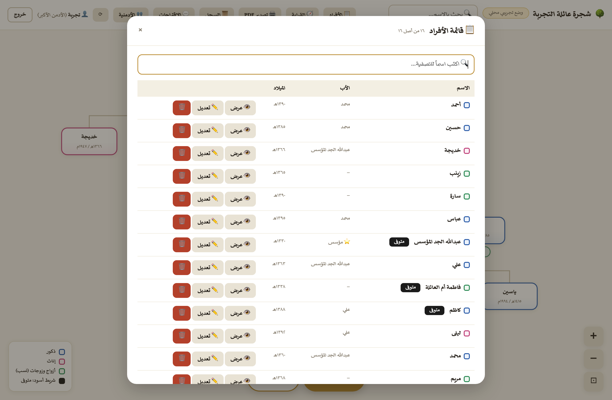
قائمة الأفراد: لون كل شخص، واسم أبيه، وسنة ميلاده، وأزرار الإجراء المباشر
🌳 شجرة العائلة — الدليل الإرشادي ٩
◈ البناء لأعلى — عائلة أكبر فوق المؤسس
بدأتَ الشجرة بجدّ معين ثم أردت إضافة أبيه وإخوته؟ لا تحتاج إعادة البناء:
- افتح بطاقة المؤسس الحالي (أو أي شخص لا والد له مسجّلاً).
- اضغط «⬆ إضافة أبيه» واملأ بيانات الأب واحفظ — يصبح الأب المؤسس الجديد في قمة الشجرة، وينزل الحالي ابناً له تلقائياً بكل ذريته.
- لإخوة المؤسس وأخواته: افتح بطاقة الأب الجديد ← «＋ إضافة ابن/بنت له».
- وزر «⬆ إضافة أمه» يضيف الوالدة وتُربَط زوجةً للأب تلقائياً إن كان مسجلاً.
- كرّر ما شئت صعوداً: كل «إضافة أبيه» ترفع الشجرة طابقاً.
مثال: شجرتك تبدأ بـ«عبدالله» وأردت جدّه الأعلى: افتح بطاقة عبدالله ← «⬆ إضافة أبيه» ← اكتب «سلمان» واحفظ ← صار سلمان القمة وعبدالله ابنه ← افتح بطاقة سلمان وأضف بقية أبنائه (إخوة عبدالله) واحداً واحداً.
◈ تحديد القرابة — بالضغط على البطاقات
- افتح بطاقة أي شخص واضغط «🧭 قرابته بغيره» (أو زر «🧭 القرابة» بالشريط ثم اضغط بطاقة الشخص الأول).
- يظهر شريط ذهبي أعلى الشجرة يرشدك — اضغط بطاقة الشخص الآخر فتنبثق القرابة فوراً مع سلسلة النسب.
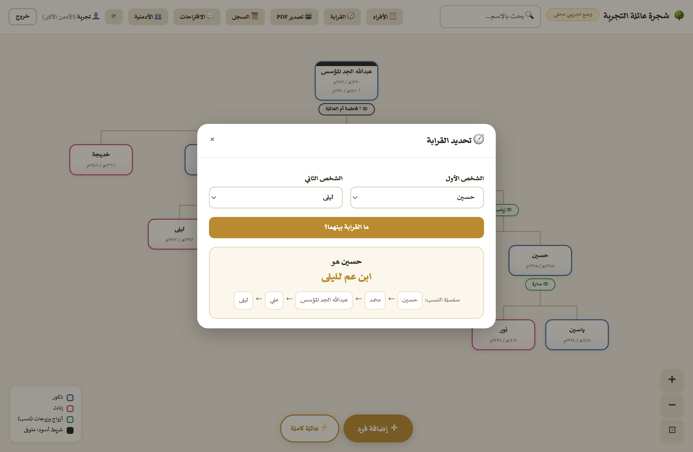
النتيجة بالمصطلح العربي (ابن عم، خال، حفيد…) مع سلسلة النسب كاملة عبر الجد المشترك
🌳 شجرة العائلة — الدليل الإرشادي ١٠
◈ تصدير الشجرة PDF
- اضغط «🖨 تصدير PDF» في شريط الأدوات.
- اختر النطاق: «العائلة كلها»، أو «فرع شخص» ثم اختر رأس الفرع (شخص وذريته فقط).
- اضغط تصدير — تفتح نافذة الطباعة: اختر فيها Save as PDF / حفظ كـ PDF والاتجاه الأفقي (Landscape).
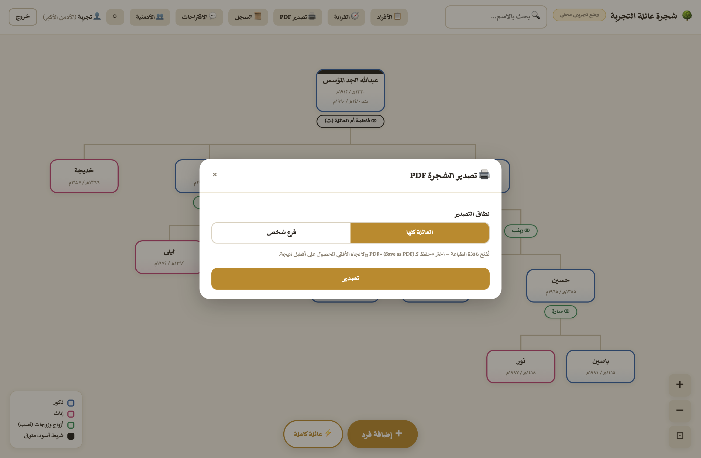
نافذة التصدير — وكل صفحة ناتجة بترويسة ذهبية باسم العائلة، وتذييل فيه العدد ودليل الألوان والتاريخ ورقم الصفحة
الشجرة الكبيرة تتوزع تلقائياً: إن كانت الشجرة أكبر من أن تُقرأ في صفحة واحدة، يُخرِجها التطبيق صفحاتٍ منظمة: صفحة «النظرة العامة» للأجيال الأولى (مع شارة «⤵ فرعه في صفحة مستقلة» تحت كل ابنٍ له ذرية)، ثم صفحة كاملة لكل فرع بحجم كبير واضح.
تلميح: «PDF لفرعه» في بطاقة أي شخص طريق أسرع لتصدير عائلة صغيرة — مناسب لطباعة فرع كل بيت وحده.
🌳 شجرة العائلة — الدليل الإرشادي ١١
◈ للأدمن الأكبر: إدارة الأدمنية
- اضغط «👥 الأدمنية» — يظهر جدول الحسابات الحالية.
- للإضافة: اكتب اسم مستخدم جديداً (إنجليزي) وكلمة مرور (٦ أحرف فأكثر) مرتين ← «إنشاء الحساب» ← أعطِ الاسمَ والكلمةَ لصاحبها.
- للإزالة: زر «إزالة» أمام أي أدمن — يفقد الدخول فوراً وتبقى إضافاته السابقة مسجلة باسمه.
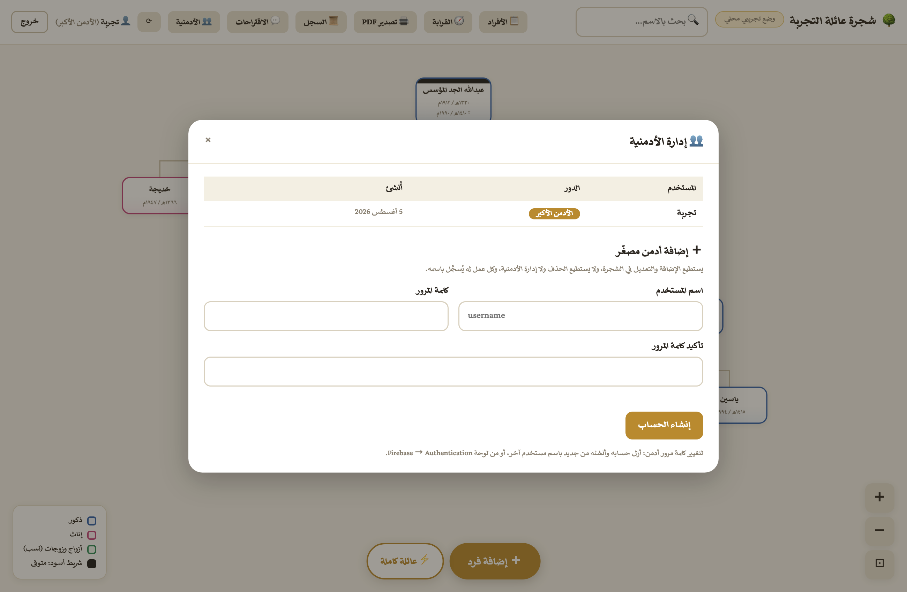
نافذة الأدمنية: الجدول أعلى، ونموذج إضافة أدمن مصغّر أسفل
💾 النسخ الاحتياطي
في أسفل نافذة الأدمنية: «⬇ تنزيل نسخة احتياطية» يحفظ الشجرة كاملة ملفاً واحداً — نزّله دورياً واحتفظ به. و«⬆ استعادة من ملف» تعيد الشجرة بكاملها من أي نسخة سابقة (بتأكيد مزدوج، وللأدمن الأكبر وحده).
📜 سجل التعديلات
زر «السجل» يعرض كل عملية: وقتها، ومن فعلها، ونوعها (إضافة/تعديل/حذف/أدمن)، واسم الفرد — فلا يضيع أثر أي تغيير.
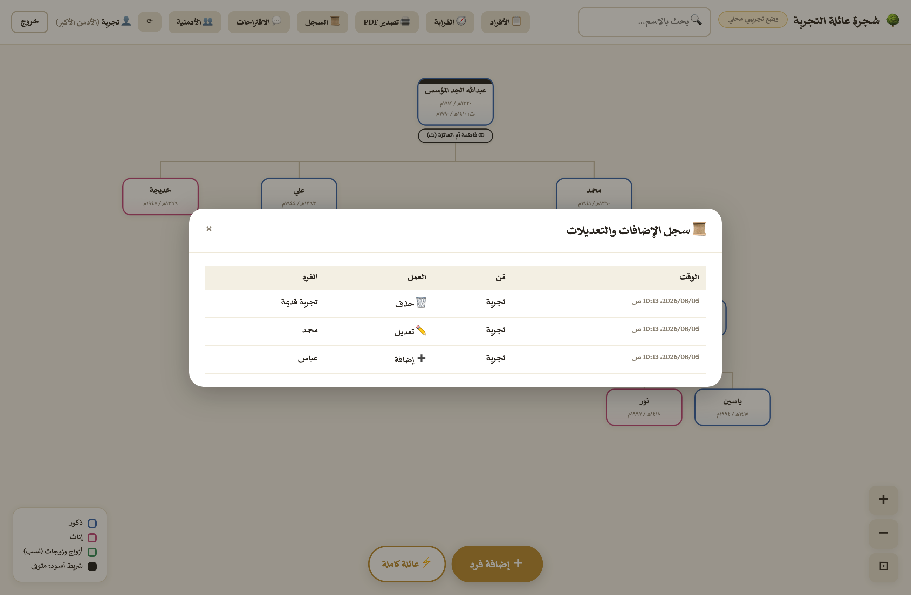
🌳 شجرة العائلة — الدليل الإرشادي ١٢
◈ صفحة العرض العام — للعائلة كلها
شارك هذا الرابط مع من تحب من العائلة: haydarvsky.github.io/familytree/view.html
- يشاهد الزائر الشجرة كاملة ويبحث ويحسب القرابة ويصدّر PDF — دون حساب ودون قدرة على التعديل.
- «📨 املأ بيانات أسرتك» — الزر الذهبي أسفل الشاشة: يبحث الزائر عن اسمه ويفتح نموذج أسرته مباشرة (انظر الصفحة التالية).
- وإن أراد إضافة أو تصحيحاً: يضغط «💬 اقتراح» ويكتب اسمه واقتراحه فيصل للأدمنية.
- اقتراح مربوط بفرد معيّن: يفتح الزائر بطاقة الفرد ويضغط «💬 اقتراح على هذا الفرد» — فيصل الاقتراح موسوماً باسمه، ويضغط الأدمن الوسمَ «🔗» في قائمة الاقتراحات فتفتح بطاقة الفرد مباشرة للتعديل.
- رابط بطاقة بعينها: أي رابط منسوخ بزر «🔗 نسخ رابط بطاقته» يفتح صفحة العرض على ذلك الفرد مباشرة مع تمييزه بإطار ذهبي.
- إشعار تلغرام: يصل الأدمنَ إشعارٌ فوري بكل اقتراح جديد وبكل نموذج أسرة وارد (عبر بوت العائلة في تلغرام).
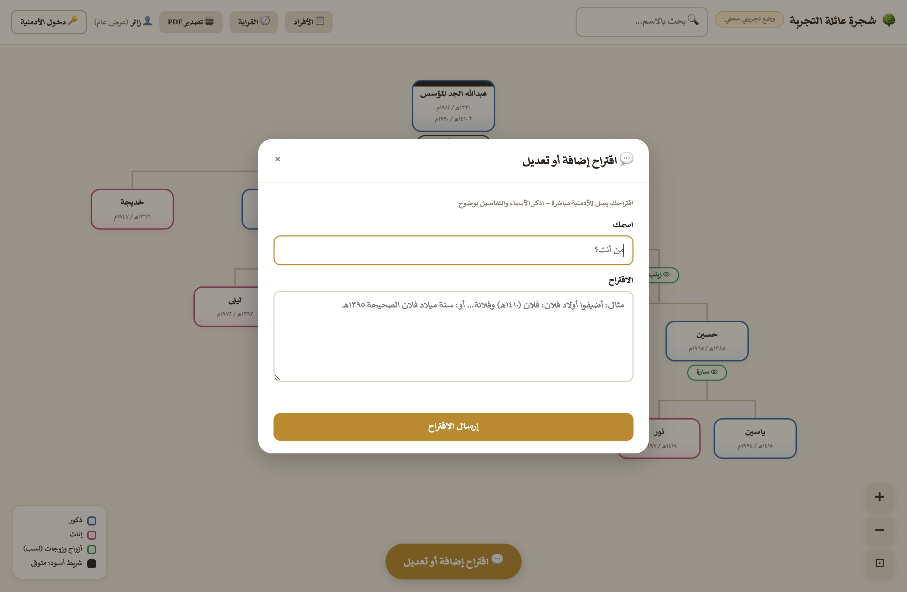
نموذج الاقتراح في صفحة الزائر — لاحظ زر «🔑 دخول الأدمنية» أعلى الصفحة
◈ 📨 نموذج «املأ بيانات أسرتك»
أسرع طريقة لبناء الشجرة: اجعل كل فرد يملأ أسرته بنفسه، وأنت تعتمد بضغطة. وله طريقان:
الطريق الأول — ذاتياً بلا وسيط: أي فرد يفتح رابط العرض العام ويضغط الزر الذهبي «📨 املأ بيانات أسرتك» أسفل الشاشة، فيبحث عن اسمه ويضغطه ليفتح نموذجه — أو يفتح بطاقته في الشجرة ويضغط «📨 هذا أنا — أملأ بيانات أسرتي». فيكفي أن تنشر رابط العرض في قروب العائلة.
الطريق الثاني — يرسله الأدمن لشخصٍ بعينه:
- افتح بطاقة الفرد ← «📨 رابط نموذج أسرته» — تُنسخ رسالة جاهزة فيها رابطه الخاص، أرسلها له في واتساب.
- يفتح الرابط فيجد أسرته المسجّلة في الشجرة ظاهرةً أمامه معبّأة: زوجاته وأبناؤه بأسمائهم وسنواتهم وأمهاتهم — فيصحّح الخطأ، ويكمل الناقص، ويضيف الجديد في الأسطر الفارغة، ثم يرسل تحديثاً لا نموذجاً جديداً.
- يصلك إشعار تلغرام مفصّل فور الإرسال: اسم الفرد ومَن أرسل النموذج، وقائمة الزوجات والأبناء بسنواتهم، وملاحظته — ويظهر الطلب أيضاً في زر «📥 النماذج».
- وأمامك ثلاثة خيارات:
«✅ اعتماد كما هو» فتُضاف العائلة دفعة واحدة،
أو «✏️ مراجعة وتعديل قبل الاعتماد» إن أردت التثبّت أولاً،
أو «🗑 حذف الطلب».
✏️ المراجعة والتعديل قبل الاعتماد
تفتح لك نافذة فيها كل ما أرسله قابلاً للتحرير قبل أن يدخل الشجرة:
- صحّح أسماء الزوجات والأبناء إملائياً، أو غيّر سنوات الميلاد أو نوع الابن (ولد/بنت) بضغطة.
- احذف أي سطر خاطئ بـ ✕، أو أضف سطراً جديداً نسيه المرسِل.
- حدّد أم كل ابن من قائمة الزوجات، وعدّل بيانات الفرد نفسه (ميلاده وتخصصه ونبذته).
- ملاحظة المرسِل تظهر أمامك أثناء المراجعة، ثم اضغط «✅ اعتماد بعد التعديل» — ويُسجَّل في السجل أن الاعتماد تم بعد تعديلك.
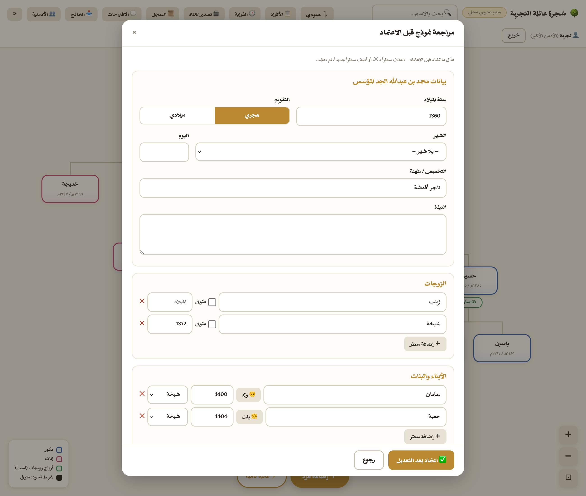
نافذة المراجعة: كل بيانات النموذج قابلة للتصحيح قبل دخولها الشجرة
ذكيٌّ في الاعتماد: كل من كان مسجّلاً في الشجرة يُحدَّث في مكانه ولا يتكرر (اسمه، سنة ميلاده، نوعه، أمه)، والجديد وحده يُضاف، وكل ابن يُنسب لأمه المحددة. وتُميَّز البطاقة بوسم «🔄 تحديث عائلة» أو «➕ عائلة جديدة»، ويوضّح الوسم أمام كل اسم إن كان «مسجَّل» أو «جديد». والعملية تُسجَّل في السجل: «١ إضافة، ٢ تحديث».
طلب الإزالة: إن حذف الفردُ من نموذجه اسماً مسجّلاً في الشجرة، لا يُحذف تلقائياً — بل يصلك بقائمة «⚠️ طلب إزالتهم» لتراجعها وتقرر بنفسك.
أين تصل الاقتراحات؟
للأدمنية زر «💬 الاقتراحات» يعرضها بأسماء أصحابها وأوقاتها؛ يقرؤها الأدمن وينفّذ الصواب منها بنفسه، ويحذفها الأدمن الأكبر بعد تنفيذها.
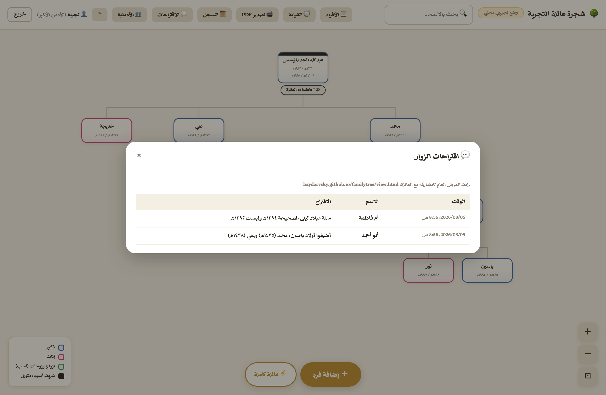
🌳 شجرة العائلة — الدليل الإرشادي ١٣
◈ نصائح وأسئلة شائعة
- التعديلات لا تظهر عندي؟ حدّث الصفحة، وإن بقيت قديمة فحدّث تحديثاً قوياً (⌘+Shift+R على ماك) — وتأكد من رقم الإصدار أسفل شاشة الدخول.
- زر ⟳ في شريط الأدوات يعيد تحميل بيانات الشجرة فوراً دون تحديث الصفحة — مفيد إذا كان زميلك يضيف الآن.
- الحذف: للأدمن الأكبر وحده — وانتبه: حذف أي فرد يحذف معه فرعه كاملاً (زوجاته وذريته وأزواجهم من خارج العائلة)، ويظهر تأكيدان بالعدد والأسماء قبل التنفيذ فتثبّت جيداً. أما زوجٌ من صلب العائلة فيبقى في مكانه من الشجرة.
- أخطأت في الحفظ؟ افتح الشخص من «📋 الأفراد» وعدّله — كل شيء قابل للتصحيح، والسجل يحفظ من عدّل.
- سنة الميلاد غير معروفة؟ اتركها فارغة — يمكن إكمالها لاحقاً، ويصلح أن يقترحها أحد الأقارب من صفحة العرض.
- زوجة توفيت وتزوج أخرى؟ أضف الزوجتين كلتيهما وعلّم على المتوفاة «متوفاة» — التاريخ كله يبقى محفوظاً.
- ابن من زوجة غير معروفة؟ اربطه بالأب واترك الأم «غير محددة» — يظهر تحت الأب مباشرة.
- الصور تُضغط تلقائياً لحجم صغير — ضع صوراً واضحة الوجه فالمعروض دائرة صغيرة.
- على الجوال: أضف الصفحة للشاشة الرئيسية (مشاركة ← Add to Home Screen) فتفتح كتطبيق.
خلاصة عمل الأدمن المصغّر: ادخل ← «＋ إضافة فرد» أو «📋 الأفراد» للتعديل ← احفظ. وما أشكل عليك فاسأل الأدمن الأكبر — كل عملك مسجّل باسمك في السجل.
خلاصة عمل الأدمن الأكبر: أنشئ الأدمنية ووزّع الحسابات ← تابع «السجل» و«الاقتراحات» دورياً ← نفّذ الاقتراحات الصحيحة واحذفها ← أنت وحدك تملك الحذف فتثبّت قبل حذف أي فرد.
— تم بحمد الله —